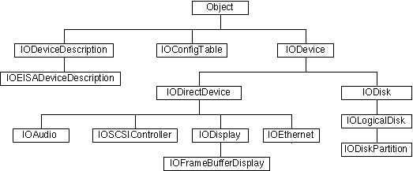
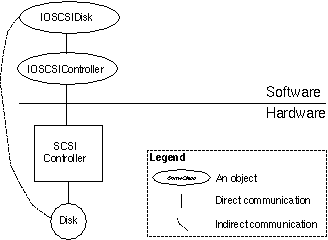
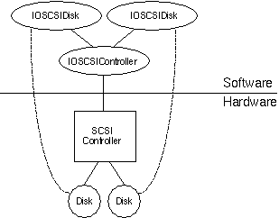

Copyright ©1995 by NeXT Computer, Inc. All Rights Reserved.
| 1 |
Driver Kit Architecture
| The Driver Kit is a tool kit for writing object-oriented device drivers. Part of the NEXTSTEP Developer software (except for 680x0-based computers), it simplifies writing device drivers for NEXTSTEP systems. The Driver Kit provides as much of the software in a device driver as possible without specific information about the device. The Driver Kit developers have already done much of the work of writing a NEXTSTEP device driver for you.
The preface briefly described the Driver Kit and mentioned a few of its advantages. This chapter provides greater detail about what a Driver Kit driver is and how it's structured. It discusses the components of the Driver Kit and what they do. It contrasts developing a Driver Kit driver to developing a typical UNIXTMdriver--this contrast shows some of the advantages of the Driver Kit approach. It talks about the various Driver Kit classes and how you create a driver with them. The chapter finishes with a discussion of how drivers are integrated into the system at startup time, how interrupts are handled, and how users interface with drivers. |
| Driver Kit Components |
| The Driver Kit consists of the following tools: |
| Objective C classes and protocols that provide the framework for writing drivers for various types of devices. The first three chapters discuss how to use these classes. The section "Classes" in Chapter 5, "Driver Kit Reference," specifies each class in detail. | ||
| Objective C classes that help user-level programs to configure and communicate with drivers. Configuration is discussed in Chapter 4, "Building, Configuring, and Debugging Drivers." The "The User-Level Interface to Drivers" section in this chapter and "Interfacing with the Driver" in Chapter 2, "Designing a Driver," tell how to communicate with drivers. | ||
| C functions that provide debugging capabilities, kernel services such as memory and time management, and other services. These functions provide most of the operating system services your driver should need. The "Functions" section of Chapter 5, "Driver Kit Reference," contains specifications for these functions. | ||
| Utility programs that help you load a driver into an already running system and help you test and debug your driver. Chapter 4, "Building, Configuring, and Debugging Drivers," tells you about these programs. |
| The rest of this chapter describes the basics of Driver Kit architecture. |
| Why Objective C?
Why is Objective C the required language for the Driver Kit? Part of the reason is that all other NEXTSTEP Application Program Interfaces (APIs) are object-oriented and use Objective C. But more importantly, drivers benefit in several ways from object-orientation and Objective C: |
| Naturalness--Object orientation is a natural design method for drivers. Each hardware object can be modeled by a software | ||
| object, | and functionality common to a group of drivers (such as display drivers) can be provided by superclasses. | |
| Flexibility--Objective C provides dynamic typing and binding, which help different objects communicate without having to be | ||
| compiled | together. For example, this lets a SCSI peripheral driver determine at run time which SCSI controller driver it should | |
| communicate | with. You can simulate dynamism using function lookup tables and type casting in ANSI C, but this results in code | |
| that's | harder to understand and maintain. | |
| Code reduction--The Driver Kit provides classes that significantly lessen the amount of code you have to write. For example, | ||
| the | IODirectDevice class greatly simplifies configuration and initialization, and IOFrameBufferDisplay takes care of almost | |
| everything | that a display driver must do. |
| See NEXTSTEP Object-Oriented Programming and the Objective C Language for more information on Objective C. |
| Device and Bus Support |
| The Driver Kit has classes to help you write drivers for several kinds of devices: |
| Displays | ||
| Network cards for Ethernet and Token Ring networks | ||
| SCSI controllers and peripherals such as tape drives | ||
| Sound cards |
| The IOEthernet class, for example, provides much of the functionality required for Ethernet drivers. To write a driver for a new type of Ethernet card, you need to implement only six methods, filling in the details of how your hardware performs the various functions required in an Ethernet driver.
Chapter 3, "Support for Specific Devices," tells you how to implement a driver for device types the Driver Kit explicitly supports. You can write drivers for other kinds of devices than those listed above. The devices above are merely those that the Driver Kit specifically supports. In addition, the Driver Kit has general-purpose classes that support these computer buses: |
| ISA (Industry Standard Architecture) | ||
| EISA (Extended Industry Standard Architecture, a superset of ISA) | ||
| VL-Bus (VESA Local Bus, where VESA is Video Electronics Standards Association) | ||
| PCI (Peripheral Component Interconnect) | ||
| PCMCIA (Personal Computer Memory Card International Association) |
| Both ISA and VL-Bus are supported through the EISA bus class.
You indicate the bus type that your driver works with in the configuration file for the driver. See Chapter 4, "Building, Configuring, and Debugging Drivers," for more information. |
| Driver Structure |
| To appreciate the structural simplicity of a Driver Kit driver, first consider how standard UNIX drivers are constructed.
UNIX Driver Architecture A UNIX driver has a "top-half" that is accessed through the system call interface and runs in the kernel on behalf of a user process. It manages the driver state and initiates data transfers. The "bottom- half" runs at interrupt level since it's driven by interrupts caused by data transfer completion or other asynchronous events. Interrupts are handled by the driver's interrupt handler, which may call top-half routines at interrupt priorities. Indirect devices--devices that are not directly connected to the processor, such as secondary-bus devices or SCSI peripherals--are each handled in an individual fashion--there's no systematic way to treat them. This design paradigm has several consequences: |
| Multiple requests may attempt to access the same hardware or driver data structures at the same time. | ||
| Interrupts may occur at any time, and their handlers may also need to access hardware or data structures. |
| To coordinate access to these hardware and data resources, the driver must use such tactics as disabling interrupts, changing processor priority, and engaging locks of various types. The resulting code is often complicated: difficult to write, debug, understand, and maintain.
Driver Kit Driver Architecture You can write a UNIX style driver with the Driver Kit, but that's not the best way to go about it. Driver Kit drivers differ significantly from traditional UNIX or MS-DOSTMdrivers. Driver Kit drivers have these characteristics: |
| Drivers are objects. The Driver Kit is written in the Objective C language, which supports object-oriented programming. This programming approach also allows code that's common to all drivers--or a set of drivers such as network drivers--to be written once and inherited by subclasses. | ||
| By default, each driver uses only one thread--the I/O thread--to access its hardware device. All I/O threads reside in a separate kernel task--the I/O kernel task. | ||
| By default, there's one I/O thread for each hardware device. Given any hardware resource, only one thread deals with that resource at a time. Traditional device drivers use locks and disable interrupts to protect access to hardware and data structures. Limiting resource access to only one thread greatly simplifies driver design. | ||
| Interface methods in the driver are invoked from the user thread: the thread running in the kernel on behalf of the user. These methods communicate requests to the I/O thread using techniques such as Mach messaging, and they enqueue commands for the I/O thread to execute. The I/O thread can then handle one request at a time instead of being subjected to a barrage of requests to access multiple resources at the same time. (Interface methods don't perform I/O requests directly, because only the I/O thread should touch hardware and other critical resources.) |
| Note: Mach messages are not the same as Objective C messages that are sent to objects. Mach messaging refers to use of the Mach operating system's message system. See the references on the Mach operating system and the Objective C language in the "Suggested Reading" section of the Appendix. |
| The kernel takes all interrupts and notifies the I/O thread via Mach messages. Drivers don't need to run with interrupts disabled. The Driver Kit's thread-based model lets the driver delay responding to interrupts until it's ready to deal with them. The UNIX concept of a direct interrupt handler--a section of driver code that executes as soon as an interrupt is detected by the kernel--has been replaced by this Mach messaging mechanism. Interrupt handling is discussed in greater detail in "Servicing Interrupts" in this chapter. You can register your own interrupt handler if that's required, but unless you do, your driver will run at the user or I/O thread level--not at interrupt level. | ||
| Drivers for devices that are connected to the processor indirectly through some secondary bus--such as SCSI peripherals connected to a SCSI bus--have a structured way to communicate with the drivers controlling the secondary bus. For example, SCSI controller objects conform to an Objective C protocol that SCSI peripheral drivers can employ. | ||
| Driver Kit drivers are currently kernel-level drivers, either as loadable kernel servers or as part of the kernel supplied by NeXT. User-level drivers are not yet supported. |
| Tip: Running drivers at user level would make testing hardware much easier, and it would greatly reduce the likelihood of system panics due to driver bugs. This design goal hasn't been realized yet. However, when you design your driver, you should keep in mind the possibility of it becoming a user-level driver. To make porting drivers from kernel to user level as easy as possible, much of the Driver Kit API is identical at kernel level and at user level. In future releases, the goal is to allow all drivers to run at user level.
Although it's possible to write a UNIX style driver with the Driver Kit, that's not the best way to proceed. You wouldn't be taking full advantage of the capabilities of the Driver Kit, and you would be doing a lot of extra work. |
| Driver Classes and Instances |
| You implement a driver by creating a subclass of one of the device type classes in the Driver Kit. A driver object is an instance of this subclass you've defined.
Each Driver Kit class has a set of methods, some of which don't actually do anything. These methods--even the ones that do nothing--provide a framework for you to build on. The classes and their methods all ignore hardware-dependent aspects of a driver to some extent. Of course, every driver must control real hardware, so you must implement or override the methods provided in the Driver Kit so that they perform their intended functions with your hardware. You essentially "fill in the blanks" in the methods to develop much of your driver. You choose the Driver Kit class for which you're going to create a subclass based on the device type, such as display, network, sound, and so on. For example, you can write an Ethernet card driver by creating a subclass of the IOEthernet class. You then override each method in the IOEthernet superclass by writing code that performs that method's functions--using the software interface to your particular Ethernet card hardware. In other words, you take the generic methods provided by the IOEthernet class and make them specific to your hardware in the subclass that you implement. Most Driver Kit classes are never instantiated. Instead, they serve as abstract classes that give capabilities to their subclasses. For example, IODisplay is an abstract class that implements functionality common to all displays. The hierarchy of Driver Kit classes has three main branches, as shown in Figure 1-1. |
|  |
| Figure 1-1. Some Core Driver Kit Classes
Note: Classes for developing disk drivers, such as IODisk, aren't currently documented. You create a subclass of a class in the IODevice branch to create your driver. All drivers are instances of subclasses of IODevice. These classes provide frameworks for specific types of device drivers. The other two branches--IODeviceDescription and IOConfigTable--provide information about drivers. IOConfigTable objects get configuration information about particular devices and the system as a whole from configuration tables, which specify how a driver is to be configured. IODeviceDescription objects encapsulate configuration and other information about the driver and are used for initializing the driver. These classes allow you to configure the driver into the system and allow it to communicate with system hardware. In summary, the Driver Kit provides a framework for developing a driver for NEXTSTEP systems. It provides many of the pieces you need to create a driver--classes and protocols, methods, functions, and utilities--and puts the pieces together for you. A class hierarchy groups methods logically by function and device type. A thread mechanism, including a default I/O thread, ensures that methods work together, taking advantage of the NEXTSTEP architecture. You still have to implement the methods to fit your hardware, but the basic structure is already there. The paradigm embodied in the Driver Kit fits well with NEXTSTEP, but it's different from the model that standard UNIX drivers use. You can write a driver using a UNIX model, but it would require greater effort.
Direct and Indirect Device Drivers Some devices, such as displays and network devices, are connected directly to the processor, and their drivers are referred to as direct device drivers. Other devices are connected to the processor indirectly through some secondary bus--such as SCSI peripherals connected to a SCSI bus. Drivers for such devices are called indirect device drivers. Drivers for direct devices talk to the hardware directly. Indirect device drivers talk to their device hardware indirectly through some direct device. A SCSI disk driver, for instance, communicates with the disk through a SCSI controller driver, which controls the SCSI bus. Thus drivers talk to hardware either directly or indirectly, or they may not deal with hardware at all. Drivers are thus further classified into these three types: |
| Direct device drivers (for example, drivers for SCSI controllers) | ||
| Indirect device drivers (for example, drivers for disks attached to SCSI controllers) | ||
| Pseudo device drivers (drivers that control no hardware) |
| These classes work differently, are initialized differently, and require different system resources. This manual focuses primarily on direct and indirect drivers, not pseudo device drivers.
Note that the IODevice branch in Figure 1-1 is further split into two branches. On one side is IODirectDevice, from which you would create a subclass for a direct device driver. Indirect device drivers stem from the other branch and are subclasses of IODevice. |
| Terminology Used in This Document
The term driver refers to the implementation of a subclass of one of the Driver Kit device classes--since Driver Kit classes are typically abstract classes. Instances of a driver are instances of the subclass. Often an object is referred to as an object of one of its superclasses--for example, as an IOSCSIController object or IODevice object--to indicate that the object is an instance of any subclass of the superclass. Finally, device is sometimes used to refer to any IODevice object. |
| As Figure 1-1 shows, IOSCSIController, IODisplay, and IOEthernet are subclasses of IODirectDevice. This classification occurs because instances of their subclasses talk directly to the hardware, performing such operations as handling interrupts, mapping memory, and performing DMA operations. IODisk, an indirect device class, is a subclass of IODevice--but not of IODirectDevice. This occurs because IODisk objects don't talk directly to the hardware: They talk indirectly to the hardware by sending request messages to IODirectDevice objects such as IOSCSIControllers.
Figure 1-2 shows how two objects--one an instance of a direct device driver, the other an instance of an indirect device driver--combine to control two pieces of hardware. The indirect driver, an IOSCSIDisk object, uses the direct driver, an IOSCSIController object, to control the hardware. Note: IOSCSIDisk is a nonpublic subclass of IODisk. |
|  |
| Figure 1-2. How Objects Correspond to Hardware
One Device Driver Object per Hardware Device There is one device driver object for each hardware device. In Figure 1-3, one IOSCSIController object manages the SCSI controller, and an IOSCSIDisk object manages each disk. Both disks are connected to the same SCSI controller, so both IOSCSIDisk objects communicate with the hardware using the single IOSCSIController object. |
|  |
| Figure 1-3. One-to-One Correspondence between Driver Objects and Hardware Devices
Key Driver Kit Classes You typically create a subclass of either IODevice or IODirectDevice (or one of its subclasses) to create a driver.
IODevice: The Generic Device Driver Every driver is a subclass of IODevice. This class provides a standard programming interface for probing hardware and for creating, initializing, and registering a driver instance.
IODirectDevice: The Class for All Direct Devices IODirectDevice is the class for drivers that directly control hardware. This class adds data (that is, instance variables) and methods for managing interrupts, DMA channels, address ranges, and other resources. It contains a configuration table, an NXStringTable object of key/value pairs that hold configuration data provided by the system and the user. The IODirectDevice class has Objective C categories for specific hardware buses: |
| IOEISADirectDevice for EISA-, ISA-, and VL-Bus-based systems | ||
| IOPCIDirectDevice for PCI-based systems | ||
| IOPCMCIADirectDevice for PCMCIA-based systems |
| Display, network, SCSI controller, and sound drivers are all direct drivers that can be implemented as subclasses of IODirectDevice--or its subclasses. IODirectDevice has subclasses for each of these specific device types. For example, you can use the IODisplay class (a subclass of IODirectDevice) to write a display driver.
IODeviceDescription: Device Information For every IODevice object, there's a device description object--an instance of the IODeviceDescription class--that contains information about the device. Thus every device in a system has a device description that contains information about the device: |
| Device address | ||
| System resources (IRQ, DMA channels, and so on) used by the device | ||
| Other information specific to the bus type |
| Instance variables in IODevice (of which the driver is a subclass) contain the rest of the device information, such as device type. The configuration tables, such as Default.table and Instancen.table, contain the device driver configuration information. These tables can be modified using the Configure application.
Class Components When you create a subclass, you add instance variables that are appropriate for your hardware, such as variables for memory-mapped registers. A subclass might include the following typical instance variables: |
| Pointers to hardware registers | ||
| Device state from volatile or write-only registers | ||
| Driver mode or state | ||
| I/O management variables such as queue heads, locks for critical structures, or data buffer pointers | ||
| Any per-device private data that normally goes in a UNIX driver's "softc" structure |
| Your subclass inherits a set of methods from its superclass to perform such actions such as these: |
| Initialize the driver object | ||
| Get and set values of instance variables | ||
| Send commands to hardware | ||
| Receive notifications such as interrupts, I/O completions, and timeouts |
| In your subclass you can override methods from the superclass, and you can also add new ones. You customize these methods to work with your device's hardware.
Suppose, for example, you're implementing a display driver for a display card that can linearly map the entire frame buffer. Create a subclass of the IOFrameBufferDisplay class (a subclass of IODisplay), then override four methods to do the following operations: |
| initFromDeviceDescription: to invoke super's implementation of initFromDeviceDescription:, map the display into the memory, and select the display mode. | ||
| enterLinearMode to place the frame buffer device into the linear frame buffer mode selected during device initialization. | ||
| revertToVGAMode to set the display to run as a standard VGA device. | ||
| setBrightness: to control screen brightness, if the hardware supports this function. |
| Once you've done this, you've finished much of your driver. |
| The User-Level Interface to Drivers |
| You typically don't need to be concerned about interfacing with your driver: The kernel automatically finds the driver and uses its methods to communicate with the driver. Most display, network, SCSI controller, and sound drivers are integrated into the system this way. For some devices, such as SCSI peripherals, you may need to write an interface program called by user programs or other drivers. This interface program invokes the driver's methods to communicate with the driver.
See "Interfacing with the Driver" in Chapter 2 for more discussion of user-level to driver-level communication. |
| How IODevice Objects are Created |
| Drivers are packaged into driver bundles. A driver bundle contains its relocatable code and configuration information--everything needed to load and configure the driver. It may also contain help information, programs to be run before and after loading the driver, and a configuration inspector that the Configure application uses to access configuration data. Chapter 4, "Building, Configuring, and Debugging Drivers," tells you more about bundle contents and how to create a driver bundle.
When the system starts up, it goes through three steps to create each driver object, using the information in the driver bundle: |
| 1. | Load the relocatable code for the driver. | |
| 2. | Create an IODeviceDescription object for the device. | |
| 3. | Send a probe: message to the IODevice class object to instantiate a driver object. |
| The system goes through two phases of driver creation. In the first phase, it performs these three steps to create all the boot device drivers. Boot drivers are the drivers that must be loaded before the kernel can be active, such as the driver for the boot device. In the second phase, the system creates the active device drivers--drivers for the rest of the devices in the system. The System.config/Instance0.table file defines the boot and active devices.
Some driver objects need to know about each other. For instance, an indirect driver controlling a SCSI peripheral needs to communicate with the direct driver that manages the SCSI controller. These drivers get connected with each other during the startup process. See "Connecting the Driver," in Chapter 2, "Designing a Driver." The system is not limited to creating drivers only at system start up time. You can also load a driver after the system has started up with the driverLoader command. See "Using the driverLoader Command" in Chapter 4, "Building, Configuring, and Debugging Drivers," for more information.
Loading Driver Relocatable Code In the first phase of driver object creation, the kernel loads the driver's relocatable code (in the file Driver_reloc in the driver bundle, where Driver is the driver's name) if necessary. The driver is already loaded if it's in the kernel. If there are multiple instances of the driver, the relocatable code is loaded only once.
Creating a Device Description Next, the kernel creates an IOConfigTable object that provides methods to examine the appropriate configuration file for the driver (either Default.table or Instancen.table). The IOConfigTable object parses the configuration information it gets, which is in configuration key/value pairs in this file. From this information, the kernel instantiates an IODeviceDescription object, which encapsulates information about the driver. The driver's bus type is indicated in the configuration table as the value associated with the "Bus Type" configuration key (see "Configuration Keys" in the Appendix). The kernel creates the appropriate IODeviceDescription object for the bus: |
| Bus Type | IODevice Description Subclass | |
| EISA, ISA, VL-Bus | IOEISADeviceDescription | |
| PCI | IOPCIDeviceDescription | |
| PCMCIA | IOPCMCIADeviceDescription |
| IOPCIDeviceDescription and IOPCMCIADeviceDescription are subclasses of IOEISADeviceDescription, which is a subclass of IODeviceDescription.
After instantiating the IODeviceDescription object, the kernel may do further initialization, using methods in IODeviceDescription to get configuration information. For example, for a PCI-bus device, the kernel might check whether the location of the object on the bus is correct, and if it isn't, the kernel doesn't initialize that device. If the system supports automatic detection of devices, it automatically scans all system buses to determine which devices are present and to obtain additional configuration information. For more information, see "Auto Detection of Devices" in "Other Features" of Chapter 5, "Reference." Some EISA- and PCI-based systems support this feature. For more information on configuration tables, see Chapter 4.
Instantiating Drivers The kernel invokes probe:, a class method in the IODevice class, to instantiate a driver. You must override this method in your driver. The receiver of a probe: message determines whether to create a new instance of itself, with the help of information passed as the probe: message's argument--the IODeviceDescription object created in the previous step. The IODeviceDescription object contains information about the device's logical location in the system, and the device can query this object for additional information about the way it is configured. From this information, probe: can determine whether the device exists. If the device is present, probe: instantiates and initializes the driver. Your probe: method should invoke the initFromDeviceDescription: method, which initializes the driver. Note: Use the alloc and initFromDeviceDescription: methods to instantiate and initialize the driver, not the new method. If probe: creates a driver instance, it returns YES. Otherwise, it returns NO. Note: Declare your probe: method to return BOOL--not id. |
| I/O and Interrupt Requests |
| Everything a driver does--whether or not it's a Driver Kit driver--is the result of one of two types of requests: |
| I/O requests (from a user-level program, the kernel, or another driver) | ||
| Interrupt requests (from the hardware) |
| Interrupt requests include "soft interrupts," such as timeout notifications. The Driver Kit thread-based design allows you to manage I/O requests and interrupts one at a time.
Scheduling Hardware Access with I/O Threads Different drivers have different requirements for ordering their accesses to the hardware. Driver Kit display drivers are very simple in this respect: they don't have to queue requests because the Window Server is the only process that makes requests, and it sends them one at a time. Display drivers may be particularly simple because on many systems, display hardware doesn't generate interrupts. Other drivers have to be more careful. These drivers use an I/O thread--a single thread of execution that handles all access to a single hardware device. Some of the device classes, such as those for SCSI controllers, network, and sound devices, start up the default I/O thread for you. Typically, each driver instance has exactly one I/O thread. However, some drivers use a single I/O thread for more than one instance. What matters is that only one thread at a time has access to any particular hardware resource. Note: Some hardware devices can handle more than one request at once. For example, some SCSI controllers can queue multiple commands. At any given time, the I/O thread should be doing exactly one of two things: |
| Waiting for an I/O request (from a user, the kernel, or another driver) or an interrupt message | ||
| Executing (dealing with the hardware) |
| Processes can use a variety of mechanisms to communicate I/O requests to the I/O thread. One of these mechanisms--Mach messages--is the same way the kernel informs the I/O thread that an interrupt has occurred. In this scheme, the kernel enqueues Mach messages for the I/O thread. When the I/O thread isn't executing a request, it dequeues the message and invokes an appropriate driver method in response. (You can also write a custom I/O thread to take whatever action you want in response to messages.) "Synchronizing with the I/O Thread" in Chapter 2 provides more details.
The I/O thread model greatly simplifies driver development and lessens the time needed for debugging the driver. Only one thread deals with any hardware resource at a time, so it's not necessary to use locks and disable interrupts to protect access to hardware and data structures. The user thread communicates requests to the I/O thread, and commands can be enqueued for the I/O thread to execute. The driver can handle one request at a time--instead of many requests to access multiple resources at the same time.
Servicing Interrupts The Driver Kit has a simple scheme for servicing interrupts: The kernel notifies drivers of interrupts by sending them Mach messages. Each driver can receive these messages whenever it chooses, typically when it isn't executing any other requests. The advantages of this scheme become clear when you consider an alternative--the traditional UNIX method of handling interrupts. Traditional UNIX drivers handle interrupts as soon as they happen--even if the driver is already executing an I/O request. Each driver registers an interrupt handling function that's called whenever the device interrupts. Some systems can't tell exactly which device interrupted, so they call several drivers' interrupt handlers until one accepts the interrupt. While an interrupt is being handled, nothing else in the system (except higher priority interrupt handlers) can execute. Under the traditional UNIX scheme, drivers can't control when interrupts occur. All they can do is control when interrupts don't occur by disabling interrupts. Drivers disable interrupts to protect critical sections of code, such as those that access hardware or access data structures that are also used by interrupt handlers. However, disabling interrupts has disadvantages: |
| If a driver disables interrupts for too long, the consequences can be anything from reduced performance to system crashes or hangs. | ||
| If a driver disables interrupts and, through some bug, fails to reenable them, the system will hang. | ||
| It's easy to fail to protect a critical section--especially when you're changing code that someone else wrote--which can result in bugs that are hard to track down. |
| The Driver Kit scheme of interrupt handling lets you choose when to handle interrupts, so you don't have to protect critical sections from interrupt handlers. This scheme works well with most hardware devices.
IODirectDevice provides a default I/O thread that intercepts Mach interrupt messages and notifies drivers of them with Objective C messages. Driver objects are notified of interrupts with the interruptOccurred or interruptOccurredAt: message. See the sections "Interfacing with the Driver" and "Handling Interrupts" in Chapter 2 and the IODirectDevice class specification in Chapter 5 for more information. A few devices require that interrupts be handled immediately. For example, a device might have a register that must be read within 50 microseconds of the interrupt occurring. On some devices data overruns occur if interrupts aren't handled quickly enough. In these cases, a kernel-level driver might need to register a direct interrupt handler--a function that's called as soon as the interrupt is detected. This function should perform any time-critical operations and, if necessary, send a Mach message so that the driver can further process the interrupt. The section "Custom Interrupt Handlers" in Chapter 2 describes how this interrupt handling function should work. |